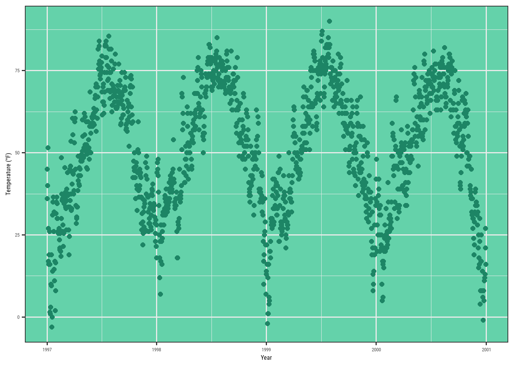
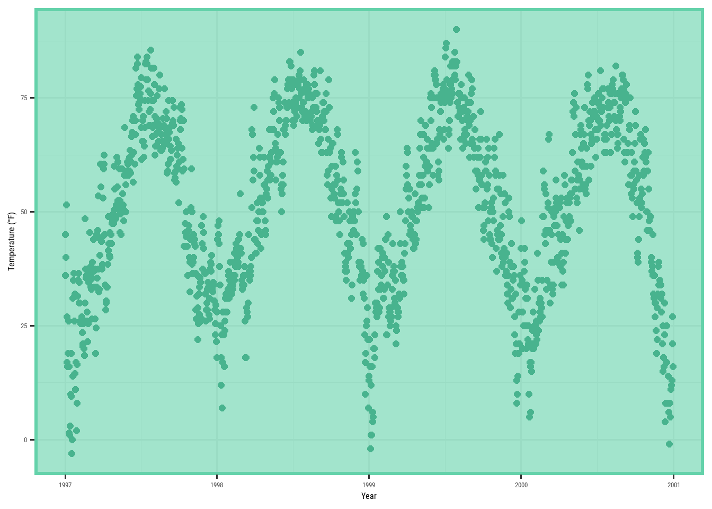
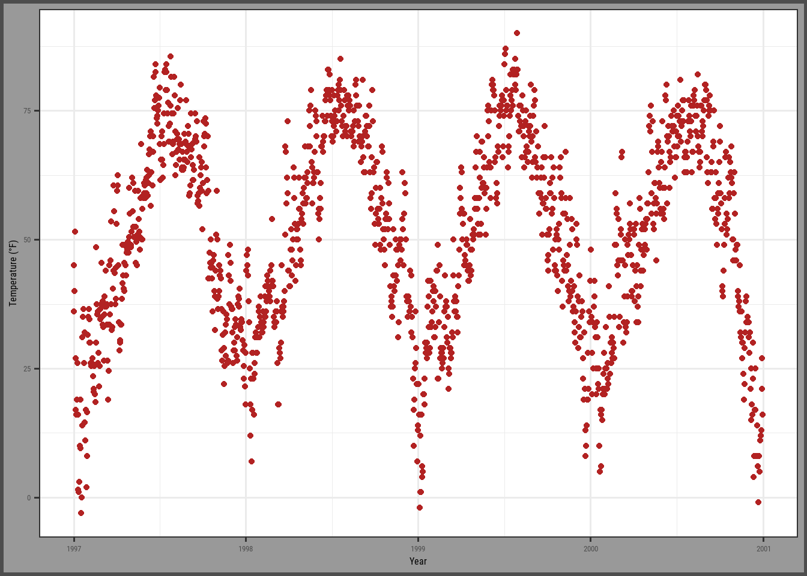
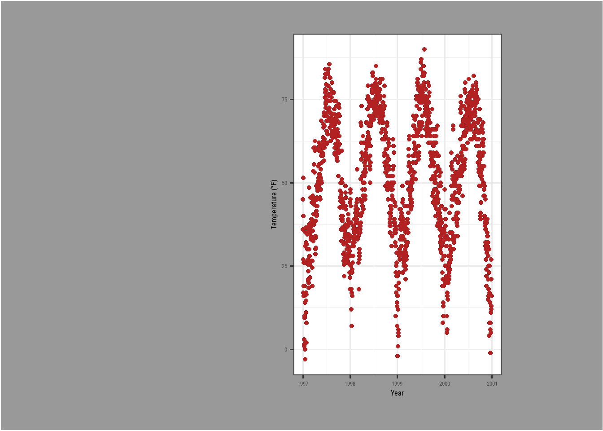
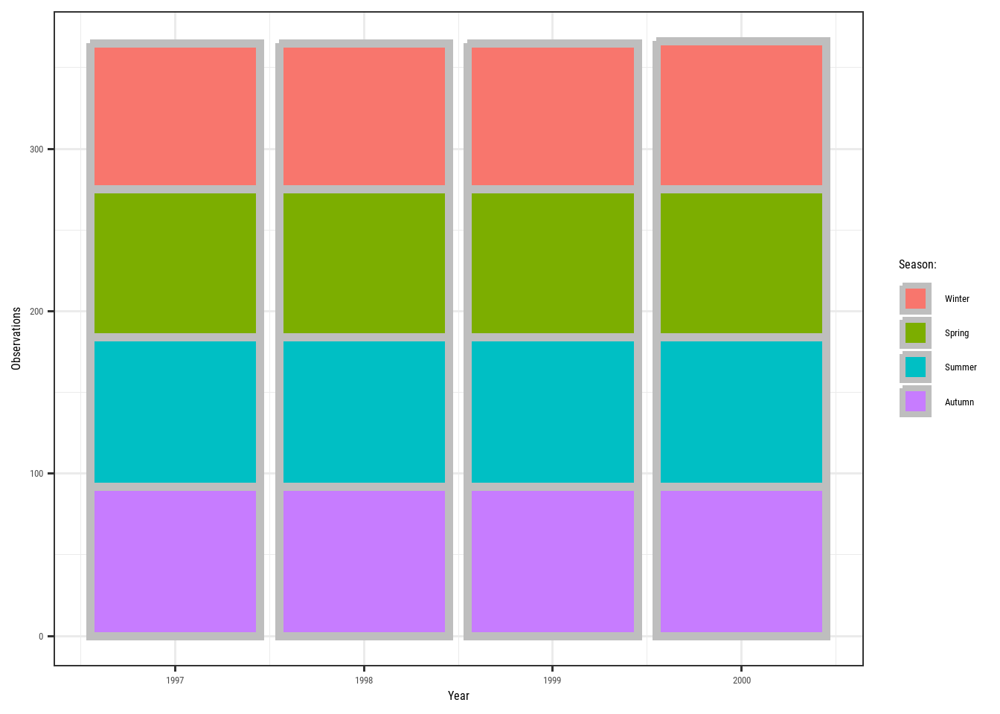
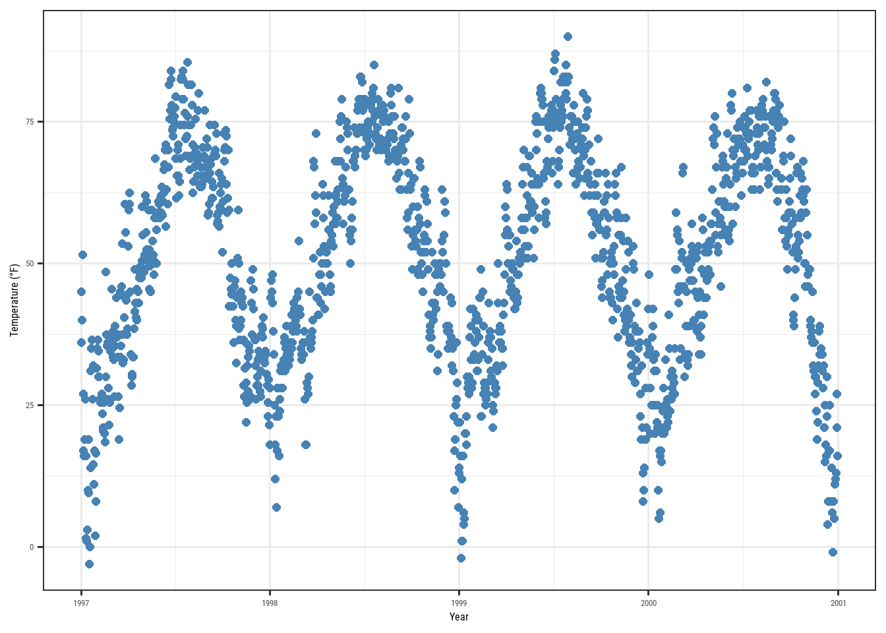
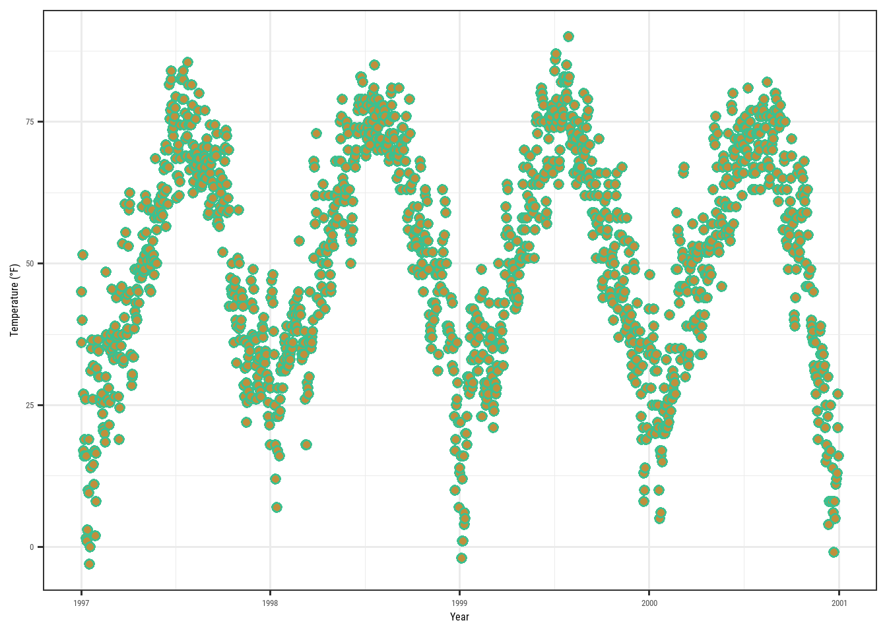
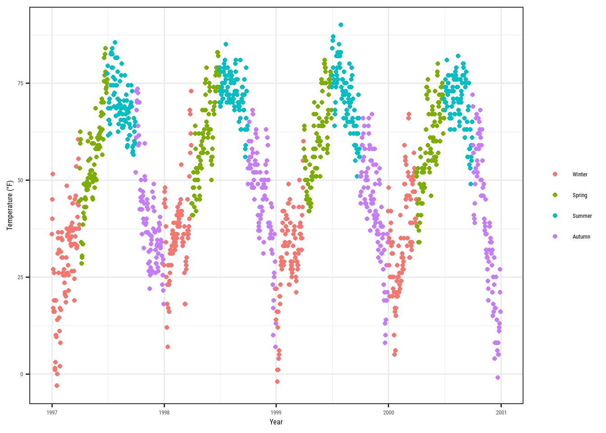

Rows: 1461 Columns: 10
── Column specification ────────────────────────────────────────────────────────
Delimiter: ","
chr (3): city, season, month
dbl (6): temp, o3, dewpoint, pm10, yday, year
date (1): date
ℹ Use `spec()` to retrieve the full column specification for this data.
ℹ Specify the column types or set `show_col_types = FALSE` to quiet this message.
# A tibble: 10 × 10
city date temp o3 dewpoint pm10 season yday month year
<chr> <date> <dbl> <dbl> <dbl> <dbl> <chr> <dbl> <chr> <dbl>
1 chic 1997-01-01 36 5.66 37.5 13.1 Winter 1 Jan 1997
2 chic 1997-01-02 45 5.53 47.2 41.9 Winter 2 Jan 1997
3 chic 1997-01-03 40 6.29 38 27.0 Winter 3 Jan 1997
4 chic 1997-01-04 51.5 7.54 45.5 25.1 Winter 4 Jan 1997
5 chic 1997-01-05 27 20.8 11.2 15.3 Winter 5 Jan 1997
6 chic 1997-01-06 17 14.9 5.75 9.36 Winter 6 Jan 1997
7 chic 1997-01-07 16 11.9 7 20.2 Winter 7 Jan 1997
8 chic 1997-01-08 19 8.68 17.8 33.1 Winter 8 Jan 1997
9 chic 1997-01-09 26 13.4 24 12.1 Winter 9 Jan 1997
10 chic 1997-01-10 16 10.4 5.38 24.8 Winter 10 Jan 1997
3 The {ggplot2} package
A ggplot is built up from a few basic elements:
Data;
Geometriesgeom_: the geometric shape (hình dạng) that will represent the data;
Aestheticsaes_: aesthetics (thẩm mỹ) of the geometric or statistical objects, such as postition, color, size, shape, and transparency;
Scalesscale_: map between the data and the aesthetics dimensions (ánh xạ từ dữ liệu đến đồ thị), such as data range to plot width or factor values to colors;
Statistical transformationsstat_: statistical summaries (thống kê) of data, such as quantitles, fitted curves, and sums;
Coordinate systemcoord_: the transformation used for mapping data coordinates into the plane of the data rectangles (hệ tọa độ);
Facetsfacet_: the arrangement of the data into a grid of plots;
Visual themestheme(): the overall visual defaults of a plot, such as background, grids, axes, default typeface, sizes and colors (tông).
Each of above elements can be ignored, but can be also called multiple times.
4 A default ggplot
Load the package for ability to use the functionality:
Show the code
library(ggplot2)# library(tidyverse) # can also be imported from the tidy-universe!
A default ggplot needs three things that you have to specify: the data, aesthetics, and a geometry.:
starting to define a plot by using ggplot(data = df);
if we want to plot (in most cases) 2 variables, we must add positional aestheticsaes(x = var1, y = var2);
Notice that data was mentioned outside the scope of aes(), while variables are being mentioned inside aes().
For instance:
Show the code
(g <-ggplot(chic, aes(x = date, y = temp)))
Just a blank panel, because ggplot2does not know how we plot data ~ we still need to provide geometry. ggplot2 allows us to store the ggobject to a variable inside the environment - in this case, g - which can be extended later on (by adding more layers). We can print out the plot to the R interactive by putting all inside the ().
We have different geometries to use (called geoms because each function usually starts with geom_). For e.g., if we want to plot a scatter plot.
Show the code
g +geom_point()
also a line plot which our managers always like:
Show the code
g +geom_line()
cool but the plot does not look optimal, we can also using mutiple layers of geometry, where the magic and fun start.
Show the code
# it's the same if we write g + geom_line() + geom_point()g +geom_point() +geom_line()
4.1 Change properties of geometries
Turn all points to large fire-red diamonds:
Show the code
g +geom_point(color ='firebrick', shape ='diamond', size =2)
Note
ggplot2 can unsderstand when we use color, colour, as well as col;
Not only the degree symbol before F, but also the supper script:
Show the code
ggplot(chic, aes(x = date, y = temp)) +geom_point(color ="firebrick") +labs(x ="Year", y =expression(paste("Temperature (", degree ~ F, ")"^"(Hey, why should we use metric units?!)")))
5.2 Increase space between axis and axis titles.
Overwrite the default element_text() within the theme() call:
t and r in the margin are top and right. Margin has 4 arguments: margin(t, r, b, l). A good way to remember the order of the margin sides is “t-r-ou-b-l-e”.
5.3 Change aesthetics of the axis titles
Again, we use theme() function and modify the axis.title and/or the subordinated elements axis.title.x and axis.title.y . Within element_text(), we can modify the default of size, color, and face.
Show the code
ggplot(chic, aes(x = date, y = temp)) +geom_point(color ="firebrick") +labs(x ="Year", y ="Temperature (°F)") +theme(axis.title =element_text(size =15, color ="firebrick",face ="italic"))
the face argument can be used to make the font bold, italic, or even bold.italic.
Show the code
ggplot(chic, aes(x = date, y = temp)) +geom_point(color ="firebrick") +labs(x ="Year", y ="Temperature (°F)") +theme(axis.title.x =element_text(color ="sienna", size =15, face ='bold'),axis.title.y =element_text(color ="orangered", size =15, face ='bold.italic'))
You could also use a combination of axis.title and axis.title.y, since axis.title.x inherits the values from axis.title. Eg:
One can modify some properties for both axis titles and other only for one or properties for each on its own:
Show the code
ggplot(chic, aes(x = date, y = temp)) +geom_point(color ="firebrick") +labs(x ="Year", y ="Temperature (°F)") +theme(axis.title =element_text(color ="sienna", size =15, face ="bold"),axis.title.y =element_text(face ="bold.italic"))
5.4 Change aesthetics of axis text
Similar to the title, we can change the appearance of the axis text (number indeed) by using axis.text and/or the subordinated elements axis.text.x and axis.text.y.
Specifying an angle help us to rotate any text elements. With hjust and vjust we can adjust the position of text afterwards horizontally (0 = left, 1 = right), and vertically (0 = top, 1 = bottom).
Show the code
ggplot(chic, aes(x = date, y = temp)) +geom_point(color ='firebrick') +labs(x="Year", y =expression(paste("Temperature(",degree ~ F, ")"))) +# 50 means 50 degrees, not % =)))theme(axis.text.x =element_text(angle =50, vjust =1, hjust =1, size =13))
5.6 Remove axis text & ticks
Rarely a reason to do this but this is how it works.
Show the code
ggplot(chic, aes(x = date, y = temp)) +geom_point(color ="firebrick") +labs(x ="Year", y ="Temperature (°F)") +theme(axis.ticks.y =element_blank(),axis.text.y =element_blank())
If you want to get rid of a theme element, the element is always element_blank.
5.7 Remove Axis Titles
We could again use element_blank() but it is way simpler to just remove the label in the labs() (or xlab()) call:
Show the code
ggplot(chic, aes(x = date, y = temp)) +geom_point(color ="firebrick") +labs(x =NULL, y ="")
Note that NULL removes the element (similarly to element_blank()) while empty quotes "" will keep the spacing for the axis title and simply print nothing.
5.8 Limit axis range
Some time you want to take a closer look at some range of you data. You can do this without subsetting your data:
Show the code
ggplot(chic, aes(x = date, y = temp)) +geom_point(color ="firebrick") +labs(x ="Year", y ="Temperature (°F)") +ylim(c(0, 50))
Warning: Removed 777 rows containing missing values or values outside the scale range
(`geom_point()`).
Alternatively you can use scale_y_continuous(limits = c(0, 50)) (subsetting) or coord_cartesian(ylim = c(0, 50)). The former removes all data points outside the range while the second adjusts the visible area (zooming) and is similar to ylim(c(0, 50)) (subsetting).
5.9 Force plot to start at the origin
Show the code
chic_high <- dplyr::filter(chic, temp >25, o3 >20)ggplot(chic_high, aes(x = temp, y = o3)) +geom_point(color ="darkcyan") +labs(x ="Temperature higher than 25°F",y ="Ozone higher than 20 ppb") +expand_limits(x =0, y =0)
Using coord_cartesian(xlim = c(0,NA), ylim = c(0,NA)) will lead to the same result.
But we can also force it to literally start at the origin!
Show the code
ggplot(chic_high, aes(x = temp, y = o3)) +geom_point(color ="darkcyan") +labs(x ="Temperature higher than 25°F",y ="Ozone higher than 20 ppb") +expand_limits(x =0, y =0) +coord_cartesian(expand =FALSE, clip ="off")
The argument clip = "off" in any coordinate system, always starting with coord_*, allows to draw outside of the panel area. Call it here to make sure that the tick marks at c(0, 0) are not cut.
5.10 Axes with same scaling
Use coord_equal() with default ratio = 1 to ensure the units are equally scaled on the x-axis and on the y-axis. We can set the aspect ratio of a plot with coord_fixed() or coord_equal(). Both use aspect = 1 (1:1) as a default.
Show the code
ggplot(chic, aes(x = temp, y = temp +rnorm(nrow(chic), sd =20))) +geom_point(color ="sienna") +labs(x ="Temperature (°F)", y ="Temperature (°F) + random noise") +xlim(c(0, 100)) +ylim(c(0, 150)) +coord_fixed()
Warning: Removed 70 rows containing missing values or values outside the scale range
(`geom_point()`).
Ratios higher than one make units on the y axis longer than units on the x-axis, and vice versa:
Show the code
ggplot(chic, aes(x = temp, y = temp +rnorm(nrow(chic), sd =20))) +geom_point(color ="sienna") +labs(x ="Temperature (°F)", y ="Temperature (°F) + random noise") +xlim(c(0, 100)) +ylim(c(0, 150)) +coord_fixed(ratio =1/5)
Warning: Removed 49 rows containing missing values or values outside the scale range
(`geom_point()`).
5.11 Use a function to alter labels
In case you want to format (eg. adding % sign) without change the data. It’s like lambda in Python!
Show the code
ggplot(chic, aes(x = date, y = temp)) +geom_point(color ="firebrick") +labs(x ="Year", y =NULL) +scale_y_continuous(label =function(x) {return(paste(x, "Degrees Fahrenheit"))})
6 Titles
6.1 Add a title
We can add a title via ggtitle() function.
Show the code
ggplot(chic, aes(x = date, y = temp)) +geom_point(color ="firebrick") +labs(x ="Year", y ="Temperature (°F)") +ggtitle("Temperatures in Chicago")
Alternatively, we can use labs(), where we can add serveral arguments ~ metadata of the plot (a sub-title, a caption, and a tag):
Show the code
ggplot(chic, aes(x = date, y = temp)) +geom_point(color ="firebrick") +labs(x ="Year", y ="Temperature (°F)",title ="Temperatures in Chicago",subtitle ="Seasonal pattern of daily temperatures from 1997 to 2001",caption ="Data: NMMAPS",tag ="Fig 1")
6.2 Make title bold & add a space at the baseline
We want to, again, modify the properties of a theme element, we use theme() with it elements & conjunctions. These settings not only work for the title, but also for plot.subtitle, plot.caption, plot.tag, legend.title, legend.text, axis.title, and axis.text.
Show the code
ggplot(chic, aes(x = date, y = temp)) +geom_point(color ="firebrick") +labs(x ="Year", y ="Temperature (°F)",title ="Temperatures in Chicago") +theme(plot.title =element_text(face ="bold",margin =margin(10, 0, 10, 0),size =14))
6.3 Adjust the position of titles
We can use the hjust and vjust for horizontal and vertical alighment:
Show the code
ggplot(chic, aes(x = date, y = temp)) +geom_point(color ="firebrick") +labs(x ="Year", y =NULL,title ="Temperatures in Chicago",caption ="Data: NMMAPS") +theme(plot.title =element_text(hjust =1, size =16, face ="bold.italic"))
But since 2019, we can also use plot.title.position and plot.caption.position. This fit better for the case of long long axis that makes the alignment looks terrible.
The old way:
Show the code
(g <-ggplot(chic, aes(x = date, y = temp)) +geom_point(color ="firebrick") +scale_y_continuous(label =function(x) {return(paste(x, "Degrees Fahrenheit"))}) +labs(x ="Year", y =NULL,title ="Temperatures in Chicago between 1997 and 2001 in Degrees Fahrenheit",caption ="Data: NMMAPS") +theme(plot.title =element_text(size =14, face ="bold.italic"),plot.caption =element_text(hjust =0)))
The new one:
Show the code
g +theme(plot.title.position ="plot",plot.caption.position ="plot")
6.4 Use a non-traditional font in your title
The fonts you can use are not limited by the ones provided by ggplot2, and the OS/fonts installed as well. We can use showtext for various types of font (TrueType, OpenType, Type 1, web fonts, etc.). The font_acc_google() and font_add() also work well, especially for Google fonts. But note that you must have the fonts installed, then re-load the IDE (Rstudio or VS Code) to use them.
Show the code
library(showtext)
Warning: package 'showtext' was built under R version 4.4.3
Loading required package: sysfonts
Loading required package: showtextdb
Show the code
font_add_google("Playfair Display", ## name of Google font"Playfair") ## name that will be used in Rfont_add_google("Bangers", "Bangers")
And then voila we can use them with, again, theme():
Show the code
# From author's code, I've added `showtext_auto()`, then it worked!# https://stackoverflow.com/questions/56072340/fonts-not-available-in-r-after-importingshowtext_auto()ggplot(chic, aes(x = date, y = temp)) +geom_point(color ="firebrick") +labs(x ="Year", y ="Temperature (°F)",title ="Temperatures in Chicago",subtitle ="Daily temperatures in °F from 1997 to 2001") +theme(plot.title =element_text(family ="Bangers", hjust = .5, size =25),plot.subtitle =element_text(family ="Playfair", hjust = .5, size =15))
We can also set a font for all elements of our plot globally:
We can use the lineheight to change the spacing between lines, as how we squeezed the lines together below:
Show the code
ggplot(chic, aes(x = date, y = temp)) +geom_point(color ="firebrick") +labs(x ="Year", y ="Temperature (°F)") +ggtitle("Temperatures in Chicago\nfrom 1997 to 2001") +theme(plot.title =element_text(lineheight = .95, size =16))
7 Legends
We will map the variable season to the aesthetic color. ggplot adds legend by default when we do such thing.
Show the code
ggplot(chic,aes(x = date, y = temp, color = season)) +geom_point() +labs(x ="Year", y ="Temperature (°F)")
7.1 Turn off the legend
Use the theme(legend.position = 'none') to remove the legend:
Show the code
ggplot(chic,aes(x = date, y = temp, color = season)) +geom_point() +labs(x ="Year", y ="Temperature (°F)") +theme(legend.position ='none')
Based on specific case, we can also use the guides(color = 'none') or scale_color_discrete(guide = 'none'). Below we remove the color legend, but retain the shape legend.
Show the code
ggplot(chic,aes(x = date, y = temp,color = season, shape = season)) +geom_point() +labs(x ="Year", y ="Temperature (°F)") +guides(color ="none")
7.2 Remove legend titles
As learned before, we can use element_blank() to draw nothing.
Show the code
ggplot(chic, aes(x = date, y = temp, color = season)) +geom_point() +labs(x ="Year", y ="Temperature (°F)") +theme(legend.title =element_blank())
Either using scale_color_discrete(name = NULL) or labs(color = NULL) would drive the same result.
7.3 Change legend position
Basically, we can control the position of legend using legend.position in theme. There are top, right (default), bottom, and left:
Show the code
ggplot(chic, aes(x = date, y = temp, color = season)) +geom_point() +labs(x ="Year", y ="Temperature (°F)") +theme(legend.position ="top")
Furthermore, ggplot offers full control as we can specify legend position using “latitude” & “longtitude”. Below we also modified the rectangle’s background color to transparent.
Show the code
ggplot(chic, aes(x = date, y = temp, color = season)) +geom_point() +labs(x ="Year", y ="Temperature (°F)",color =NULL) +theme(legend.position =c(.15, .15),legend.background =element_rect(fill ="transparent"))
Warning: A numeric `legend.position` argument in `theme()` was deprecated in ggplot2
3.5.0.
ℹ Please use the `legend.position.inside` argument of `theme()` instead.
Update
Update:
A numeric legend.position argument in theme() was deprecated in ggplot2 3.5.0.
ℹ Please use the legend.position.inside argument of theme() instead.
7.4 Change legend direction
You can switch the direction of legend as you like:
Show the code
ggplot(chic, aes(x = date, y = temp, color = season)) +geom_point() +labs(x ="Year", y ="Temperature (°F)",color =NULL) +theme(legend.position =c(.15, .15),legend.background =element_rect(fill ="transparent")) +guides(color =guide_legend(direction ='horizontal'))
7.5 Change style of the legend title
By modifying the element_text() of legend.title inside theme, we can change the style of legend title.
Show the code
ggplot(chic, aes(x = date, y = temp, color = season)) +geom_point() +labs(x ="Year", y ="Temperature (°F)") +theme(legend.title =element_text(family ="Playfair",color ="chocolate",size =14, face ="bold"))
7.6 Change legend title
The easiest way - labs():
Show the code
ggplot(chic, aes(x = date, y = temp, color = season)) +geom_point() +labs(x ="Year", y ="Temperature (°F)",color ="Seasons\nindicated\nby colors:") +theme(legend.title =element_text(family ="Playfair",color ="chocolate",size =14, face ="bold"))
The other ways are: scale_color_discretet(name = "title"), or `guides(color = guide_legend(“title”)).
7.7 Change order of legend keys
Most of the time we want the full control on the order of legend keys. From Credric tutorial we can only change it by modifying the level of variable:
Show the code
chic$season <-factor(chic$season,levels =c("Winter", "Spring", "Summer", "Autumn"))ggplot(chic, aes(x = date, y = temp, color = season)) +geom_point() +labs(x ="Year", y ="Temperature (°F)")
This can be achived by providing information for label in scale_color_discrete():
Show the code
ggplot(chic, aes(x = date, y = temp, color = season)) +geom_point() +labs(x ="Year", y ="Temperature (°F)") +scale_color_discrete(name ="Seasons:",labels =c("Mar—May", "Jun—Aug", "Sep—Nov", "Dec—Feb") ) +theme(legend.title =element_text(family ="Playfair", color ="chocolate", size =14, face =2 ))
7.9 Change background boxes in the legend
Lies beside the labels are the keys. We can change their background color by modifying the element rectangle of theme legend.key:
Show the code
ggplot(chic, aes(x = date, y = temp, color = season)) +geom_point() +labs(x ="Year", y ="Temperature (°F)") +theme(legend.key =element_rect(fill ="darkgoldenrod1"),# fill = NA, fill = "transparent" would remove bg.legend.title =element_text(family ="Playfair",color ="chocolate",size =14, face =2)) +scale_color_discrete("Seasons:")
7.10 Change size of legend symbols
The default size is a litle lost in the plot, we can increase it by override the aesthetic using the guides layer again:
Show the code
ggplot(chic, aes(x = date, y = temp, color = season)) +geom_point() +labs(x ="Year", y ="Temperature (°F)") +theme(legend.key =element_rect(fill =NA),legend.title =element_text(color ="chocolate",size =14, face =2)) +scale_color_discrete("Seasons:") +guides(color =guide_legend(override.aes =list(size =6)))
7.11 Leave a layer of the legend
Duplicate legend happens when we use multiple geom for one data. Like this:
Show the code
ggplot(chic, aes(x = date, y = temp, color = season)) +geom_point() +labs(x ="Year", y ="Temperature (°F)") +geom_rug()
We can turn those redundant ones off by show.legend = FALSE:
Show the code
ggplot(chic, aes(x = date, y = temp, color = season)) +geom_point() +labs(x ="Year", y ="Temperature (°F)") +geom_rug(show.legend =FALSE)
7.12 Manually adding legend items
ggplot2 will not add legend unless you map aesthetic (color, size, etc) to a variable. But there are sometime we want it.
Show the code
ggplot(chic, aes(x = date, y = o3)) +geom_line(color ="gray") +geom_point(color ="darkorange2") +labs(x ="Year", y ="Ozone")
We force legend by providing the coloraesthetic mapping to geom:
Show the code
ggplot(chic, aes(x = date, y = o3)) +geom_line(aes(color ="line")) +geom_point(aes(color ="points")) +labs(x ="Year", y ="Ozone") +scale_color_discrete("Type:")
Then use the scale_color_manual() to change the color, and override the legend aesthetic using guides() function:
The guide_legend() would work for categorical variable only. It will us guide_colorbar() (or guide_colourbar()) by default for continuous variable.
Show the code
ggplot(chic,aes(x = date, y = temp, color = temp)) +geom_point() +labs(x ="Year", y ="Temperature (°F)", color ="Temperature (°F)")
But guide_legend() still can help you force legend to show discrete colors:
Show the code
ggplot(chic,aes(x = date, y = temp, color = temp)) +geom_point() +labs(x ="Year", y ="Temperature (°F)", color ="Temperature (°F)") +guides(color =guide_legend())
We can also use binned scale:
Show the code
ggplot(chic,aes(x = date, y = temp, color = temp)) +geom_point() +labs(x ="Year", y ="Temperature (°F)", color ="Temperature (°F)") +guides(color =guide_bins())
or binned scales as discrete colorbars:
Show the code
ggplot(chic,aes(x = date, y = temp, color = temp)) +geom_point() +labs(x ="Year", y ="Temperature (°F)", color ="Temperature (°F)") +guides(color =guide_colorsteps())
8 Backgrounds & grid lines
Several ways to change the overall look of your plot as depicted above (see working with themes). But you can also change a particular element of the plotting panel.
8.1 Change the panel background color
By simply specifying the element_rectangle of panel.background inside theme:
Show the code
ggplot(chic, aes(x = date, y = temp)) +geom_point(color ="#1D8565", size =2) +labs(x ="Year", y ="Temperature (°F)") +theme(panel.background =element_rect(fill ="#64D2AA", color ="#64D2AA", linewidth =2) )

Remember that there is panel.border layer on top of the background (and data), which is also an element_rectangle. So we should use a transparent color here not to hide the data.
Show the code
ggplot(chic, aes(x = date, y = temp)) +geom_point(color ="#1D8565", size =2) +labs(x ="Year", y ="Temperature (°F)") +theme(panel.border =element_rect(fill ="#64D2AA99", color ="#64D2AA", linewidth =2) )

8.2 Change grid lines
There are 2 type of grid lines and you can change their characteristics using panel.grid.major and panel.grid.minor.
Similar to the plotting panel, we can change the whole plot background color:
Show the code
ggplot(chic, aes(x = date, y = temp)) +geom_point(color ="firebrick") +labs(x ="Year", y ="Temperature (°F)") +theme(plot.background =element_rect(fill ="gray60",color ="gray30", linewidth =2))

By specifying the same color for both plot and panel, you can achive a unified plot color.
9 Margins
Sometime we need more space between the plot border to the plot panel/area - so called the margin. We can use plot.margin in this circumstance:
Show the code
ggplot(chic, aes(x = date, y = temp)) +geom_point(color ="firebrick") +labs(x ="Year", y ="Temperature (°F)") +theme(plot.background =element_rect(fill ="gray60"),plot.margin =margin(t =1, r =3, b =1, l =8, unit ="cm"))

Show the code
# can also use plot.margin = unit(c(1, 3, 1, 8), "cm"))
10 Multi-panel plots
ggplot2 offers 2 handy functions for multiple-small visualization: facet_grid() and facet_wrap().
10.1 Create a small multiples based on two variables
Warning: package 'cowplot' was built under R version 4.4.3
Attaching package: 'cowplot'
The following object is masked from 'package:patchwork':
align_plots
Show the code
plot_grid(plot_grid(g, p1), p2, ncol =1)
Warning in grid.Call(C_stringMetric, as.graphicsAnnot(x$label)): font family
'Roboto Condensed' not found in PostScript font database
Warning in grid.Call(C_stringMetric, as.graphicsAnnot(x$label)): font family
'Roboto Condensed' not found in PostScript font database
Warning in grid.Call(C_stringMetric, as.graphicsAnnot(x$label)): font family
'Roboto Condensed' not found in PostScript font database
Warning in grid.Call(C_stringMetric, as.graphicsAnnot(x$label)): font family
'Roboto Condensed' not found in PostScript font database
Warning in grid.Call(C_stringMetric, as.graphicsAnnot(x$label)): font family
'Roboto Condensed' not found in PostScript font database
Warning in grid.Call(C_stringMetric, as.graphicsAnnot(x$label)): font family
'Roboto Condensed' not found in PostScript font database
Warning in grid.Call(C_stringMetric, as.graphicsAnnot(x$label)): font family
'Roboto Condensed' not found in PostScript font database
Warning in grid.Call(C_stringMetric, as.graphicsAnnot(x$label)): font family
'Roboto Condensed' not found in PostScript font database
Warning in grid.Call(C_stringMetric, as.graphicsAnnot(x$label)): font family
'Roboto Condensed' not found in PostScript font database
Warning in grid.Call(C_stringMetric, as.graphicsAnnot(x$label)): font family
'Roboto Condensed' not found in PostScript font database
Warning in grid.Call(C_stringMetric, as.graphicsAnnot(x$label)): font family
'Roboto Condensed' not found in PostScript font database
Warning in grid.Call(C_stringMetric, as.graphicsAnnot(x$label)): font family
'Roboto Condensed' not found in PostScript font database
Warning in grid.Call(C_stringMetric, as.graphicsAnnot(x$label)): font family
'Roboto Condensed' not found in PostScript font database
Warning in grid.Call(C_stringMetric, as.graphicsAnnot(x$label)): font family
'Roboto Condensed' not found in PostScript font database
Warning in grid.Call(C_textBounds, as.graphicsAnnot(x$label), x$x, x$y, : font
family 'Roboto Condensed' not found in PostScript font database
Warning in grid.Call(C_textBounds, as.graphicsAnnot(x$label), x$x, x$y, : font
family 'Roboto Condensed' not found in PostScript font database
Warning in grid.Call(C_textBounds, as.graphicsAnnot(x$label), x$x, x$y, : font
family 'Roboto Condensed' not found in PostScript font database
Warning in grid.Call(C_textBounds, as.graphicsAnnot(x$label), x$x, x$y, : font
family 'Roboto Condensed' not found in PostScript font database
Warning in grid.Call(C_textBounds, as.graphicsAnnot(x$label), x$x, x$y, : font
family 'Roboto Condensed' not found in PostScript font database
Warning in grid.Call(C_textBounds, as.graphicsAnnot(x$label), x$x, x$y, : font
family 'Roboto Condensed' not found in PostScript font database
Warning in grid.Call(C_textBounds, as.graphicsAnnot(x$label), x$x, x$y, : font
family 'Roboto Condensed' not found in PostScript font database
Warning in grid.Call(C_textBounds, as.graphicsAnnot(x$label), x$x, x$y, : font
family 'Roboto Condensed' not found in PostScript font database
Warning in grid.Call(C_textBounds, as.graphicsAnnot(x$label), x$x, x$y, : font
family 'Roboto Condensed' not found in PostScript font database
Warning in grid.Call(C_stringMetric, as.graphicsAnnot(x$label)): font family
'Roboto Condensed' not found in PostScript font database
Warning in grid.Call(C_stringMetric, as.graphicsAnnot(x$label)): font family
'Roboto Condensed' not found in PostScript font database
Warning in grid.Call(C_stringMetric, as.graphicsAnnot(x$label)): font family
'Roboto Condensed' not found in PostScript font database
Warning in grid.Call(C_stringMetric, as.graphicsAnnot(x$label)): font family
'Roboto Condensed' not found in PostScript font database
Warning in grid.Call(C_stringMetric, as.graphicsAnnot(x$label)): font family
'Roboto Condensed' not found in PostScript font database
Warning in grid.Call(C_stringMetric, as.graphicsAnnot(x$label)): font family
'Roboto Condensed' not found in PostScript font database
Warning in grid.Call(C_stringMetric, as.graphicsAnnot(x$label)): font family
'Roboto Condensed' not found in PostScript font database
Warning in grid.Call(C_stringMetric, as.graphicsAnnot(x$label)): font family
'Roboto Condensed' not found in PostScript font database
Warning in grid.Call(C_stringMetric, as.graphicsAnnot(x$label)): font family
'Roboto Condensed' not found in PostScript font database
Warning in grid.Call(C_stringMetric, as.graphicsAnnot(x$label)): font family
'Roboto Condensed' not found in PostScript font database
Warning in grid.Call(C_stringMetric, as.graphicsAnnot(x$label)): font family
'Roboto Condensed' not found in PostScript font database
Warning in grid.Call(C_stringMetric, as.graphicsAnnot(x$label)): font family
'Roboto Condensed' not found in PostScript font database
Warning in grid.Call(C_stringMetric, as.graphicsAnnot(x$label)): font family
'Roboto Condensed' not found in PostScript font database
Warning in grid.Call(C_stringMetric, as.graphicsAnnot(x$label)): font family
'Roboto Condensed' not found in PostScript font database
Warning in grid.Call(C_textBounds, as.graphicsAnnot(x$label), x$x, x$y, : font
family 'Roboto Condensed' not found in PostScript font database
Warning in grid.Call(C_textBounds, as.graphicsAnnot(x$label), x$x, x$y, : font
family 'Roboto Condensed' not found in PostScript font database
Warning in grid.Call(C_textBounds, as.graphicsAnnot(x$label), x$x, x$y, : font
family 'Roboto Condensed' not found in PostScript font database
Warning in grid.Call(C_textBounds, as.graphicsAnnot(x$label), x$x, x$y, : font
family 'Roboto Condensed' not found in PostScript font database
Warning in grid.Call(C_textBounds, as.graphicsAnnot(x$label), x$x, x$y, : font
family 'Roboto Condensed' not found in PostScript font database
Warning in grid.Call(C_textBounds, as.graphicsAnnot(x$label), x$x, x$y, : font
family 'Roboto Condensed' not found in PostScript font database
Warning in grid.Call(C_textBounds, as.graphicsAnnot(x$label), x$x, x$y, : font
family 'Roboto Condensed' not found in PostScript font database
Warning in grid.Call(C_textBounds, as.graphicsAnnot(x$label), x$x, x$y, : font
family 'Roboto Condensed' not found in PostScript font database
Warning in grid.Call(C_textBounds, as.graphicsAnnot(x$label), x$x, x$y, : font
family 'Roboto Condensed' not found in PostScript font database
Warning in grid.Call(C_textBounds, as.graphicsAnnot(x$label), x$x, x$y, : font
family 'Roboto Condensed' not found in PostScript font database
Warning in grid.Call(C_textBounds, as.graphicsAnnot(x$label), x$x, x$y, : font
family 'Roboto Condensed' not found in PostScript font database
Warning in grid.Call(C_textBounds, as.graphicsAnnot(x$label), x$x, x$y, : font
family 'Roboto Condensed' not found in PostScript font database
Warning in grid.Call(C_textBounds, as.graphicsAnnot(x$label), x$x, x$y, : font
family 'Roboto Condensed' not found in PostScript font database
Warning in grid.Call(C_textBounds, as.graphicsAnnot(x$label), x$x, x$y, : font
family 'Roboto Condensed' not found in PostScript font database
Warning in grid.Call(C_textBounds, as.graphicsAnnot(x$label), x$x, x$y, : font
family 'Roboto Condensed' not found in PostScript font database
Warning in grid.Call(C_textBounds, as.graphicsAnnot(x$label), x$x, x$y, : font
family 'Roboto Condensed' not found in PostScript font database
Warning in grid.Call(C_textBounds, as.graphicsAnnot(x$label), x$x, x$y, : font
family 'Roboto Condensed' not found in PostScript font database
Warning in grid.Call(C_textBounds, as.graphicsAnnot(x$label), x$x, x$y, : font
family 'Roboto Condensed' not found in PostScript font database
Warning in grid.Call(C_textBounds, as.graphicsAnnot(x$label), x$x, x$y, : font
family 'Roboto Condensed' not found in PostScript font database
Warning in grid.Call(C_textBounds, as.graphicsAnnot(x$label), x$x, x$y, : font
family 'Roboto Condensed' not found in PostScript font database
Warning in grid.Call(C_textBounds, as.graphicsAnnot(x$label), x$x, x$y, : font
family 'Roboto Condensed' not found in PostScript font database
Warning in grid.Call(C_textBounds, as.graphicsAnnot(x$label), x$x, x$y, : font
family 'Roboto Condensed' not found in PostScript font database
Warning in grid.Call(C_textBounds, as.graphicsAnnot(x$label), x$x, x$y, : font
family 'Roboto Condensed' not found in PostScript font database
Warning in grid.Call(C_textBounds, as.graphicsAnnot(x$label), x$x, x$y, : font
family 'Roboto Condensed' not found in PostScript font database
Warning in grid.Call(C_textBounds, as.graphicsAnnot(x$label), x$x, x$y, : font
family 'Roboto Condensed' not found in PostScript font database
Warning in grid.Call(C_textBounds, as.graphicsAnnot(x$label), x$x, x$y, : font
family 'Roboto Condensed' not found in PostScript font database
Warning in grid.Call(C_textBounds, as.graphicsAnnot(x$label), x$x, x$y, : font
family 'Roboto Condensed' not found in PostScript font database
Warning in grid.Call(C_textBounds, as.graphicsAnnot(x$label), x$x, x$y, : font
family 'Roboto Condensed' not found in PostScript font database
Warning in grid.Call(C_textBounds, as.graphicsAnnot(x$label), x$x, x$y, : font
family 'Roboto Condensed' not found in PostScript font database
Warning in grid.Call(C_textBounds, as.graphicsAnnot(x$label), x$x, x$y, : font
family 'Roboto Condensed' not found in PostScript font database
Those variables that are inside the aesthetic have mapping encoded, and those are outside are unrelated properties.
Show the code
ggplot(chic, aes(year)) +geom_bar(aes(fill = season), color ="grey", linewidth =2) +labs(x ="Year", y ="Observations", fill ="Season:")

11.1 Specify single colors
We can specify single color for a geom:
Show the code
ggplot(chic, aes(x = date, y = temp)) +geom_point(color ="steelblue", size =2) +labs(x ="Year", y ="Temperature (°F)")

And if provide both, color (outline) and fill (fill):
Show the code
ggplot(chic, aes(x = date, y = temp)) +geom_point(shape =21, size =2, stroke =1,color ="#3cc08f", fill ="#c08f3c") +labs(x ="Year", y ="Temperature (°F)")

Refer then PDF of R color. You can also use hex, RGB or RGBA (via rgb(red, green, blue, alpha)).
11.2 Asign colors to variables
In ggplot2, colors that are assigned to a variables are modified via scale_color_* or scale_fill_*. You should understand what kind of variable you are dealing with (categorical or continuous) to effectively encode those (sequential, deverging, qualitative, etc).
11.3 Qualitative variables
Qualitative can be nominal, ordinal, or binary. By defalt the categorical color paletted looks like this:
Show the code
(ga <-ggplot(chic, aes(x = date, y = temp, color = season)) +geom_point() +labs(x ="Year", y ="Temperature (°F)", color =NULL))

11.3.1 Manually select qualitative colors
You can manually assign a set of colors to each category of qualitative colors (number of color has to match number of category) via scale_*_manual() (color, colour, or fill):
Show the code
ga +scale_color_manual(values =c("dodgerblue4","darkolivegreen4","darkorchid3","goldenrod1"))
---title: "A tutorial of `ggplot2`"description: "This is a again a lesson on `ggplot2`"author: - name: "Tuan Le Khac" url: https://lktuan.github.io/date: 06-30-2025date-modified: 07-06-2025categories: [r, ggplot2, visualization]image: grammar-of-graphics.pngdraft: falseformat: html: code-line-number: false code-overflow: wrap code-tools: true code-fold: show code-annotations: hover page-layout: full---# 0 PreparationThe following packages need to be installed:```{r}#| eval: false# install CRAN packagespkg_install =c("ggplot2", "tibble", "tidyr", "forcats", "purrr", "prismatic", "corrr","cowplot", "ggforce", "ggrepel", "ggridges", "ggsci", "ggtext", "ggthemes","grid", "gridExtra", "patchwork", "rcartocolor", "scico", "showtext","shiny", "plotly", "highcharter", "echarts4r")install.packages(pkg_install)```In which:- `ggplot2`: part of the `tidyverse`, implementing the grammar of graphic;- `tidyverse`: - `tibble`: mordern data frames; - `dplyr`: data wrangling; - `tidyr`: data cleaning; - `forcats`: handling factors;- `corrr`: correlation matrices;- `cowplot`: composing `ggplots`;- `ggforce`: sina plots and other cool stuffs;- `ggrepel`: nice text labeling;- `ggridges`: rigde plots;- `ggsci`: nice color palettes;- `ggtext`: advanced text rendering;- `ggthemes`: additional themes;- `grid`: creating graphical objects;- `gridExtra`: additional functions for `grid` graphics;- `patchwork`: multiple panel plots;- `prismatic`: minipulating colors;- `rcartocolor`: great color palettes;- `scico`: perceptional uniform palettes;- `showtext`: custom fonts;- `shiny`: interactive applications;- `charter`, `echarts4r`, `ggiraph`, `highcharter`, `plotly`: interactive visualization.We also need to install `devtools`:```{r}#| eval: false# install from GitHub since not on CRANinstall.packages('devtools')devtools::install_github("JohnCoene/charter")```# 1 The DatasetI was using the dataset: "*National Morbidity and Mortality Air Pollution Study* (NMMAPS)"Install the `readr` first:```{r}#| eval: falseinstall.packages('readr')```## 1.1 Import dataThe `::` here call the namespace and can be used to access a function without loading the package.```{r}library(readr)chic <- readr::read_csv("https://cedricscherer.com/data/chicago-nmmaps-custom.csv")```view some data:```{r}tibble::glimpse(chic)``````{r}head(chic,10)```# 3 The `{ggplot2}` packageA `ggplot` is built up from a few basic elements:1. **Data**;2. **Geometries** `geom_`: the geometric shape (hình dạng) that will represent the data;3. **Aesthetics** `aes_`: aesthetics (thẩm mỹ) of the geometric or statistical objects, such as postition, color, size, shape, and transparency;4. **Scales** `scale_`: map between the data and the aesthetics dimensions (ánh xạ từ dữ liệu đến đồ thị), such as data range to plot width or factor values to colors;5. **Statistical transformations** `stat_`: statistical summaries (thống kê) of data, such as quantitles, fitted curves, and sums;6. **Coordinate system** `coord_`: the transformation used for mapping data coordinates into the plane of the data rectangles (hệ tọa độ);7. **Facets** `facet_`: the arrangement of the data into a grid of plots;8. **Visual themes** `theme()`: the overall visual defaults of a plot, such as background, grids, axes, default typeface, sizes and colors (tông).Each of above elements can be ignored, but can be also called multiple times.# 4 A default `ggplot`Load the package for ability to use the functionality:```{r}library(ggplot2)# library(tidyverse) # can also be imported from the tidy-universe!```A default `ggplot` needs three things that you have to specify: the *data*, *aesthetics*, and a *geometry.*:- starting to define a plot by using `ggplot(data = df)`;- if we want to plot (in most cases) 2 variables, we must add *positional aesthetics* `aes(x = var1, y = var2);`Notice that `data` was mentioned outside the scope of `aes()`, while variables are being mentioned inside `aes()`.For instance:```{r}(g <-ggplot(chic, aes(x = date, y = temp)))```Just a blank panel, because `{ggplot2}` *does not know* how we plot data \~ we still need to provide geometry. `ggplot2` allows us to store the `ggobject` to a variable inside the environment - in this case, `g` - which can be extended later on (by adding more layers). We can print out the plot to the R interactive by putting all inside the `()`.We have different geometries to use (called `geoms` because each function usually starts with `geom_`). For e.g., if we want to plot a scatter plot.```{r}g +geom_point()```also a line plot which our managers always like:```{r}g +geom_line()```cool but the plot does not look optimal, we can also using mutiple layers of geometry, where the magic and fun start.```{r}# it's the same if we write g + geom_line() + geom_point()g +geom_point() +geom_line()```## 4.1 Change properties of geometriesTurn all points to large fire-red diamonds:```{r}g +geom_point(color ='firebrick', shape ='diamond', size =2)```::: {.callout-note}- `ggplot2` can unsderstand when we use `color`, `colour`, as well as `col`;- We can use the [default color](http://www.stat.columbia.edu/~tzheng/files/Rcolor.pdf) or [hex](https://www.techopedia.com/definition/29788/color-hex-code), or even RGB/RGBA with `rgb()`. For example:```{r}g +geom_point(color ="#b22222", shape ="diamond", size =2)g +geom_point(color =rgb(178, 34, 34, maxColorValue =255), shape ="diamond", size =2)```:::## 4.1 Replacing the default `ggplot2` themeCalling eg `theme_bw()` using `theme_set()`, all following plots will have same blank'n'white theme.```{r}theme_set(theme_bw())g +geom_point(color ='firebrick')````theme()` is also a useful function to modify all kinds of theme elements (texts, rectangles, and lines). Refer this [page](https://ggplot2.tidyverse.org/reference/theme.html) for the full list.# 5 Axes## 5.1 Change axis titlesUse `labs()` to assign character string for each lable.```{r}ggplot(chic, aes(x = date, y = temp)) +geom_point(color ='firebrick') +labs(x ='Year', y ='Temperature (°F)')```Can also using `xlab()` and `ylab()`:```{r}ggplot(chic, aes(x = date, y = temp)) +geom_point(color ="firebrick") +xlab("Year") +ylab("Temperature (°F)")```Not only the degree symbol before F, but also the supper script:```{r}ggplot(chic, aes(x = date, y = temp)) +geom_point(color ="firebrick") +labs(x ="Year", y =expression(paste("Temperature (", degree ~ F, ")"^"(Hey, why should we use metric units?!)")))```## 5.2 Increase space between axis and axis titles.Overwrite the default `element_text()` within the `theme()` call:```{r}ggplot(chic, aes(x = date, y = temp)) +geom_point(color ='firebrick') +labs(x ='Year', y ='Temperature (°F)') +theme(axis.title.x =element_text(vjust =0, size =30),axis.title.y =element_text(vjust =2, size =30))````vjust` refer to vertical alignment. We can also change the distance by specifying the margin of both text elements.```{r}ggplot(chic, aes(x = date, y = temp)) +geom_point(color ="firebrick") +labs(x ="Year", y ="Temperature (°F)") +theme(axis.title.x =element_text(margin =margin(t =10), size =15),axis.title.y =element_text(margin =margin(r =10), size =15))````t` and `r` in the `margin` are **top** and **right**. Margin has 4 arguments: `margin(t, r, b, l)`. A good way to remember the order of the margin sides is “***t-r***-ou-***b-l***-e”.## 5.3 Change aesthetics of the axis titlesAgain, we use `theme()` function and modify the `axis.title` and/or the subordinated elements `axis.title.x` and `axis.title.y` . Within `element_text()`, we can modify the default of `size`, `color`, and `face`.```{r}ggplot(chic, aes(x = date, y = temp)) +geom_point(color ="firebrick") +labs(x ="Year", y ="Temperature (°F)") +theme(axis.title =element_text(size =15, color ="firebrick",face ="italic"))```the `face` argument can be used to make the font `bold`, `italic`, or even `bold.italic`.```{r}ggplot(chic, aes(x = date, y = temp)) +geom_point(color ="firebrick") +labs(x ="Year", y ="Temperature (°F)") +theme(axis.title.x =element_text(color ="sienna", size =15, face ='bold'),axis.title.y =element_text(color ="orangered", size =15, face ='bold.italic'))```You could also use a combination of `axis.title` and `axis.title.y`, since `axis.title.x` inherits the values from `axis.title`. Eg:```{r}ggplot(chic, aes(x = date, y = temp)) +geom_point(color ="firebrick") +labs(x ="Year", y ="Temperature (°F)") +theme(axis.title =element_text(color ="sienna", size =15),axis.title.y =element_text(color ="orangered", size =15))```One can modify some properties for both axis titles and other only for one or properties for each on its own:```{r}ggplot(chic, aes(x = date, y = temp)) +geom_point(color ="firebrick") +labs(x ="Year", y ="Temperature (°F)") +theme(axis.title =element_text(color ="sienna", size =15, face ="bold"),axis.title.y =element_text(face ="bold.italic"))```## 5.4 Change aesthetics of axis textSimilar to the `title`, we can change the appearance of the axis text (number indeed) by using `axis.text` and/or the subordinated elements `axis.text.x` and `axis.text.y`.```{r}ggplot(chic, aes(x = date, y = temp)) +geom_point(color ='firebrick') +labs(x="Year", y =expression(paste("Temperature(",degree ~ F, ")"))) +theme(axis.text =element_text(color ="dodgerblue", size =13),axis.text.x =element_text(face ='italic'))```## 5.5 Rotate axis textSpecifying an `angle` help us to rotate any text elements. With `hjust` and `vjust` we can adjust the position of text afterwards horizontally (0 = left, 1 = right), and vertically (0 = top, 1 = bottom).```{r}ggplot(chic, aes(x = date, y = temp)) +geom_point(color ='firebrick') +labs(x="Year", y =expression(paste("Temperature(",degree ~ F, ")"))) +# 50 means 50 degrees, not % =)))theme(axis.text.x =element_text(angle =50, vjust =1, hjust =1, size =13))```## 5.6 Remove axis text & ticksRarely a reason to do this but this is how it works.```{r}ggplot(chic, aes(x = date, y = temp)) +geom_point(color ="firebrick") +labs(x ="Year", y ="Temperature (°F)") +theme(axis.ticks.y =element_blank(),axis.text.y =element_blank())```If you want to get rid of a theme element, the element is always `element_blank`.## 5.7 Remove Axis TitlesWe could again use `element_blank()` but it is way simpler to just remove the label in the `labs()` (or `xlab()`) call:```{r}ggplot(chic, aes(x = date, y = temp)) +geom_point(color ="firebrick") +labs(x =NULL, y ="")```Note that `NULL` removes the element (similarly to `element_blank()`) while empty quotes `""` will keep the spacing for the axis title and simply print nothing.## 5.8 Limit axis rangeSome time you want to take a closer look at some range of you data. You can do this without subsetting your data:```{r}ggplot(chic, aes(x = date, y = temp)) +geom_point(color ="firebrick") +labs(x ="Year", y ="Temperature (°F)") +ylim(c(0, 50))```Alternatively you can use `scale_y_continuous(limits = c(0, 50))` (subsetting) or `coord_cartesian(ylim = c(0, 50))`. The former removes all data points outside the range while the second adjusts the visible area (**zooming**) and is similar to `ylim(c(0, 50))` (**subsetting**).## 5.9 Force plot to start at the origin```{r}chic_high <- dplyr::filter(chic, temp >25, o3 >20)ggplot(chic_high, aes(x = temp, y = o3)) +geom_point(color ="darkcyan") +labs(x ="Temperature higher than 25°F",y ="Ozone higher than 20 ppb") +expand_limits(x =0, y =0)```Using `coord_cartesian(xlim = c(0,NA), ylim = c(0,NA))` will lead to the same result.```{r}chic_high <- dplyr::filter(chic, temp >25, o3 >20)ggplot(chic_high, aes(x = temp, y = o3)) +geom_point(color ="darkcyan") +labs(x ="Temperature higher than 25°F",y ="Ozone higher than 20 ppb") +coord_cartesian(xlim =c(0, NA), ylim =c(0, NA))```But we can also force it to *literally* start at the origin!```{r}ggplot(chic_high, aes(x = temp, y = o3)) +geom_point(color ="darkcyan") +labs(x ="Temperature higher than 25°F",y ="Ozone higher than 20 ppb") +expand_limits(x =0, y =0) +coord_cartesian(expand =FALSE, clip ="off")```The argument `clip = "off"` in any coordinate system, always starting with `coord_*`, allows to draw outside of the panel area. Call it here to make sure that the tick marks at `c(0, 0)` are not cut.## 5.10 Axes with same scalingUse `coord_equal()` with default `ratio = 1` to ensure the units are equally scaled on the x-axis and on the y-axis. We can set the aspect ratio of a plot with `coord_fixed()` or `coord_equal()`. Both use `aspect = 1` (1:1) as a default.```{r}ggplot(chic, aes(x = temp, y = temp +rnorm(nrow(chic), sd =20))) +geom_point(color ="sienna") +labs(x ="Temperature (°F)", y ="Temperature (°F) + random noise") +xlim(c(0, 100)) +ylim(c(0, 150)) +coord_fixed()```Ratios higher than one make units on the y axis longer than units on the x-axis, and vice versa:```{r}ggplot(chic, aes(x = temp, y = temp +rnorm(nrow(chic), sd =20))) +geom_point(color ="sienna") +labs(x ="Temperature (°F)", y ="Temperature (°F) + random noise") +xlim(c(0, 100)) +ylim(c(0, 150)) +coord_fixed(ratio =1/5)```## 5.11 Use a function to alter labelsIn case you want to format (eg. adding % sign) without change the data. It's like `lambda` in Python!```{r}ggplot(chic, aes(x = date, y = temp)) +geom_point(color ="firebrick") +labs(x ="Year", y =NULL) +scale_y_continuous(label =function(x) {return(paste(x, "Degrees Fahrenheit"))})```# 6 Titles## 6.1 Add a titleWe can add a title via `ggtitle()` function.```{r}ggplot(chic, aes(x = date, y = temp)) +geom_point(color ="firebrick") +labs(x ="Year", y ="Temperature (°F)") +ggtitle("Temperatures in Chicago")```Alternatively, we can use `labs()`, where we can add serveral arguments \~ metadata of the plot (a sub-title, a caption, and a tag):```{r}ggplot(chic, aes(x = date, y = temp)) +geom_point(color ="firebrick") +labs(x ="Year", y ="Temperature (°F)",title ="Temperatures in Chicago",subtitle ="Seasonal pattern of daily temperatures from 1997 to 2001",caption ="Data: NMMAPS",tag ="Fig 1")```## 6.2 Make title bold & add a space at the baselineWe want to, again, modify the properties of a theme element, we use `theme()` with it elements & conjunctions.These settings not only work for the title, but also for `plot.subtitle`, `plot.caption`, `plot.tag`, `legend.title`, `legend.text`, `axis.title`, and `axis.text`.```{r}ggplot(chic, aes(x = date, y = temp)) +geom_point(color ="firebrick") +labs(x ="Year", y ="Temperature (°F)",title ="Temperatures in Chicago") +theme(plot.title =element_text(face ="bold",margin =margin(10, 0, 10, 0),size =14))```## 6.3 Adjust the position of titlesWe can use the `hjust` and `vjust` for horizontal and vertical alighment:```{r}ggplot(chic, aes(x = date, y = temp)) +geom_point(color ="firebrick") +labs(x ="Year", y =NULL,title ="Temperatures in Chicago",caption ="Data: NMMAPS") +theme(plot.title =element_text(hjust =1, size =16, face ="bold.italic"))```But since 2019, we can also use `plot.title.position` and `plot.caption.position`.This fit better for the case of long long axis that makes the alignment looks terrible.The old way:```{r}(g <-ggplot(chic, aes(x = date, y = temp)) +geom_point(color ="firebrick") +scale_y_continuous(label =function(x) {return(paste(x, "Degrees Fahrenheit"))}) +labs(x ="Year", y =NULL,title ="Temperatures in Chicago between 1997 and 2001 in Degrees Fahrenheit",caption ="Data: NMMAPS") +theme(plot.title =element_text(size =14, face ="bold.italic"),plot.caption =element_text(hjust =0)))```The new one:```{r}g +theme(plot.title.position ="plot",plot.caption.position ="plot")```## 6.4 Use a non-traditional font in your titleThe fonts you can use are not limited by the ones provided by `ggplot2`, and the OS/fonts installed as well.We can use [`showtext`](https://github.com/yixuan/showtext) for various types of font (TrueType, OpenType, Type 1, web fonts, etc.).The `font_acc_google()` and `font_add()` also work well, especially for [Google fonts](https://fonts.google.com/). But note that you must have the fonts installed, then re-load the IDE (Rstudio or VS Code) to use them.```{r}library(showtext)font_add_google("Playfair Display", ## name of Google font"Playfair") ## name that will be used in Rfont_add_google("Bangers", "Bangers")```And then voila we can use them with, again, `theme()`:```{r}# From author's code, I've added `showtext_auto()`, then it worked!# https://stackoverflow.com/questions/56072340/fonts-not-available-in-r-after-importingshowtext_auto()ggplot(chic, aes(x = date, y = temp)) +geom_point(color ="firebrick") +labs(x ="Year", y ="Temperature (°F)",title ="Temperatures in Chicago",subtitle ="Daily temperatures in °F from 1997 to 2001") +theme(plot.title =element_text(family ="Bangers", hjust = .5, size =25),plot.subtitle =element_text(family ="Playfair", hjust = .5, size =15))```We can also set a font for all elements of our plot globally:```{r}font_add_google("Roboto Condensed", "Roboto Condensed")theme_set(theme_bw(base_size =12, base_family ="Roboto Condensed"))```## 6.5 Change spacing in multi-line textWe can use the `lineheight` to change the spacing between lines, as how we squeezed the lines together below:```{r}ggplot(chic, aes(x = date, y = temp)) +geom_point(color ="firebrick") +labs(x ="Year", y ="Temperature (°F)") +ggtitle("Temperatures in Chicago\nfrom 1997 to 2001") +theme(plot.title =element_text(lineheight = .95, size =16))```# 7 LegendsWe will map the variable `season` to the `aes`thetic `color`. `ggplot` adds legend by default when we do such thing.```{r}ggplot(chic,aes(x = date, y = temp, color = season)) +geom_point() +labs(x ="Year", y ="Temperature (°F)")```## 7.1 Turn off the legendUse the `theme(legend.position = 'none')` to remove the legend:```{r}ggplot(chic,aes(x = date, y = temp, color = season)) +geom_point() +labs(x ="Year", y ="Temperature (°F)") +theme(legend.position ='none')```Based on specific case, we can also use the `guides(color = 'none')` or `scale_color_discrete(guide = 'none')`. Below we remove the color legend, but retain the shape legend.```{r}ggplot(chic,aes(x = date, y = temp,color = season, shape = season)) +geom_point() +labs(x ="Year", y ="Temperature (°F)") +guides(color ="none")```## 7.2 Remove legend titlesAs learned before, we can use `element_blank()` to draw nothing.```{r}ggplot(chic, aes(x = date, y = temp, color = season)) +geom_point() +labs(x ="Year", y ="Temperature (°F)") +theme(legend.title =element_blank())```Either using `scale_color_discrete(name = NULL)` or `labs(color = NULL)` would drive the same result.## 7.3 Change legend positionBasically, we can control the position of legend using `legend.position` in `theme`. There are top, right (default), bottom, and left:```{r}ggplot(chic, aes(x = date, y = temp, color = season)) +geom_point() +labs(x ="Year", y ="Temperature (°F)") +theme(legend.position ="top")```Furthermore, `ggplot` offers full control as we can specify legend position using "latitude" & "longtitude". Below we also modified the rectangle's background color to transparent.```{r}ggplot(chic, aes(x = date, y = temp, color = season)) +geom_point() +labs(x ="Year", y ="Temperature (°F)",color =NULL) +theme(legend.position =c(.15, .15),legend.background =element_rect(fill ="transparent"))```::: {.callout-warning title="Update"}Update:> A numeric `legend.position` argument in `theme()` was deprecated in ggplot2 3.5.0.>> ℹ Please use the `legend.position.inside` argument of `theme()` instead.:::## 7.4 Change legend directionYou can switch the direction of legend as you like:```{r}ggplot(chic, aes(x = date, y = temp, color = season)) +geom_point() +labs(x ="Year", y ="Temperature (°F)",color =NULL) +theme(legend.position =c(.15, .15),legend.background =element_rect(fill ="transparent")) +guides(color =guide_legend(direction ='horizontal'))```## 7.5 Change style of the legend titleBy modifying the `element_text()` of `legend.title` inside `theme`, we can change the style of legend title.```{r}ggplot(chic, aes(x = date, y = temp, color = season)) +geom_point() +labs(x ="Year", y ="Temperature (°F)") +theme(legend.title =element_text(family ="Playfair",color ="chocolate",size =14, face ="bold"))```## 7.6 Change legend titleThe easiest way - `labs()`:```{r}ggplot(chic, aes(x = date, y = temp, color = season)) +geom_point() +labs(x ="Year", y ="Temperature (°F)",color ="Seasons\nindicated\nby colors:") +theme(legend.title =element_text(family ="Playfair",color ="chocolate",size =14, face ="bold"))```The other ways are: `scale_color_discretet(name = "title")`, or `guides(color = guide_legend("title")).## 7.7 Change order of legend keysMost of the time we want the full control on the order of legend keys. From Credric tutorial we can only change it by modifying the *level* of variable:```{r}chic$season <-factor(chic$season,levels =c("Winter", "Spring", "Summer", "Autumn"))ggplot(chic, aes(x = date, y = temp, color = season)) +geom_point() +labs(x ="Year", y ="Temperature (°F)")```More discussion on the internet, for eg., [here](https://stackoverflow.com/questions/69541579/ggplot2-reorder-items-in-a-legend).## 7.8 Change legend labelsThis can be achived by providing information for `label` in `scale_color_discrete()`:```{r}ggplot(chic, aes(x = date, y = temp, color = season)) +geom_point() +labs(x ="Year", y ="Temperature (°F)") +scale_color_discrete(name ="Seasons:",labels =c("Mar—May", "Jun—Aug", "Sep—Nov", "Dec—Feb") ) +theme(legend.title =element_text(family ="Playfair", color ="chocolate", size =14, face =2 ))```## 7.9 Change background boxes in the legendLies beside the labels are the **keys**. We can change their background color by modifying the *element rectangle* of theme `legend.key`:```{r}ggplot(chic, aes(x = date, y = temp, color = season)) +geom_point() +labs(x ="Year", y ="Temperature (°F)") +theme(legend.key =element_rect(fill ="darkgoldenrod1"),# fill = NA, fill = "transparent" would remove bg.legend.title =element_text(family ="Playfair",color ="chocolate",size =14, face =2)) +scale_color_discrete("Seasons:")```## 7.10 Change size of legend symbolsThe default size is a litle lost in the plot, we can increase it by `override` the `aes`thetic using the `guides` layer again:```{r}ggplot(chic, aes(x = date, y = temp, color = season)) +geom_point() +labs(x ="Year", y ="Temperature (°F)") +theme(legend.key =element_rect(fill =NA),legend.title =element_text(color ="chocolate",size =14, face =2)) +scale_color_discrete("Seasons:") +guides(color =guide_legend(override.aes =list(size =6)))```## 7.11 Leave a layer of the legendDuplicate legend happens when we use multiple `geom` for one data. Like this:```{r}ggplot(chic, aes(x = date, y = temp, color = season)) +geom_point() +labs(x ="Year", y ="Temperature (°F)") +geom_rug()```We can turn those redundant ones off by `show.legend = FALSE`:```{r}ggplot(chic, aes(x = date, y = temp, color = season)) +geom_point() +labs(x ="Year", y ="Temperature (°F)") +geom_rug(show.legend =FALSE)```## 7.12 Manually adding legend items`ggplot2` will not add legend unless you map aesthetic (`color`, `size`, etc) to a variable. But there are sometime we want it.```{r}#| code-fold: trueggplot(chic, aes(x = date, y = o3)) +geom_line(color ="gray") +geom_point(color ="darkorange2") +labs(x ="Year", y ="Ozone")```We force legend by providing the `color``aes`thetic mapping to `geom`:```{r}ggplot(chic, aes(x = date, y = o3)) +geom_line(aes(color ="line")) +geom_point(aes(color ="points")) +labs(x ="Year", y ="Ozone") +scale_color_discrete("Type:")```Then use the `scale_color_manual()` to change the color, and override the legend aesthetic using `guides()` function:```{r}ggplot(chic, aes(x = date, y = o3)) +geom_line(aes(color ="line")) +geom_point(aes(color ="points")) +labs(x ="Year", y ="Ozone") +scale_color_manual(name =NULL,guide ="legend",values =c("points"="darkorange2","line"="gray")) +guides(color =guide_legend(override.aes =list(linetype =c(1, 0),shape =c(NA, 16))))```## 7.13 Use other legend stylesThe `guide_legend()` would work for categorical variable only. It will us `guide_colorbar()` (or `guide_colourbar()`) by default for continuous variable.```{r}ggplot(chic,aes(x = date, y = temp, color = temp)) +geom_point() +labs(x ="Year", y ="Temperature (°F)", color ="Temperature (°F)")```But `guide_legend()` still can help you force legend to show discrete colors:```{r}ggplot(chic,aes(x = date, y = temp, color = temp)) +geom_point() +labs(x ="Year", y ="Temperature (°F)", color ="Temperature (°F)") +guides(color =guide_legend())```We can also use **binned scale**:```{r}ggplot(chic,aes(x = date, y = temp, color = temp)) +geom_point() +labs(x ="Year", y ="Temperature (°F)", color ="Temperature (°F)") +guides(color =guide_bins())```or binned scales as *discrete colorbars*:```{r}ggplot(chic,aes(x = date, y = temp, color = temp)) +geom_point() +labs(x ="Year", y ="Temperature (°F)", color ="Temperature (°F)") +guides(color =guide_colorsteps())```# 8 Backgrounds & grid linesSeveral ways to change the overall look of your plot as depicted above (see working with themes). But you can also change a particularelement of the plotting panel.## 8.1 Change the panel background colorBy simply specifying the `element_rect`angle of `panel.background` inside `theme`:```{r}ggplot(chic, aes(x = date, y = temp)) +geom_point(color ="#1D8565", size =2) +labs(x ="Year", y ="Temperature (°F)") +theme(panel.background =element_rect(fill ="#64D2AA", color ="#64D2AA", linewidth =2) )```Remember that there is `panel.border` layer on top of the background (and data), which is also an `element_rect`angle. So we should use a transparent color here not to hide the data.```{r}ggplot(chic, aes(x = date, y = temp)) +geom_point(color ="#1D8565", size =2) +labs(x ="Year", y ="Temperature (°F)") +theme(panel.border =element_rect(fill ="#64D2AA99", color ="#64D2AA", linewidth =2) )```## 8.2 Change grid linesThere are 2 type of grid lines and you can change their characteristics using `panel.grid.major` and `panel.grid.minor`.```{r}ggplot(chic, aes(x = date, y = temp)) +geom_point(color ="firebrick") +labs(x ="Year", y ="Temperature (°F)") +theme(panel.grid.major =element_line(color ="gray10", linewidth = .5),panel.grid.minor =element_line(color ="gray70", linewidth = .25))```We can further make it complex by specifying all 4 different levels:```{r}ggplot(chic, aes(x = date, y = temp)) +geom_point(color ="firebrick") +labs(x ="Year", y ="Temperature (°F)") +theme(panel.grid.major =element_line(linewidth = .5, linetype ="dashed"),panel.grid.minor =element_line(linewidth = .25, linetype ="dotted"),panel.grid.major.x =element_line(color ="red1"),panel.grid.major.y =element_line(color ="blue1"),panel.grid.minor.x =element_line(color ="red4"),panel.grid.minor.y =element_line(color ="blue4"))```My taste is always remove them:```{r}ggplot(chic, aes(x = date, y = temp)) +geom_point(color ="firebrick") +labs(x ="Year", y ="Temperature (°F)") +theme(panel.grid.minor =element_blank())``````{r}ggplot(chic, aes(x = date, y = temp)) +geom_point(color ="firebrick") +labs(x ="Year", y ="Temperature (°F)") +theme(panel.grid =element_blank())```## 8.3 Change spacing of grid linesWe can also change the spacing behaviour:```{r}ggplot(chic, aes(x = date, y = temp)) +geom_point(color ="firebrick") +labs(x ="Year", y ="Temperature (°F)") +scale_y_continuous(breaks =seq(0, 100, 10),minor_breaks =seq(0, 100, 2.5))```## 8.4 Change the plot background colorSimilar to the plotting panel, we can change the whole plot background color:```{r}ggplot(chic, aes(x = date, y = temp)) +geom_point(color ="firebrick") +labs(x ="Year", y ="Temperature (°F)") +theme(plot.background =element_rect(fill ="gray60",color ="gray30", linewidth =2))```By specifying the same color for both plot and panel, you can achive a unified plot color.# 9 MarginsSometime we need more space between the plot border to the plot panel/area - so called the margin. We can use `plot.margin` in this circumstance:```{r}ggplot(chic, aes(x = date, y = temp)) +geom_point(color ="firebrick") +labs(x ="Year", y ="Temperature (°F)") +theme(plot.background =element_rect(fill ="gray60"),plot.margin =margin(t =1, r =3, b =1, l =8, unit ="cm"))# can also use plot.margin = unit(c(1, 3, 1, 8), "cm"))```# 10 Multi-panel plots`ggplot2` offers 2 handy functions for *multiple-small* visualization: `facet_grid()` and `facet_wrap()`.## 10.1 Create a small multiples based on two variablesIn case of 2 variables, `facet_grid` does the job.```{r}ggplot(chic, aes(x = date, y = temp)) +geom_point(color ="orangered", alpha = .3) +theme(axis.text.x =element_text(angle =45, vjust =1, hjust =1)) +labs(x ="Year", y ="Temperature (°F)") +facet_grid(year ~ season)# remember year ~ season != season ~ year```## 10.2 Create a small mutilples based on one variables`facet_wrap` create a facet from single a variable, the appearance of subplots is controlled by `ncol` and `nrow`.```{r}g <-ggplot(chic, aes(x = date, y = temp)) +geom_point(color ="chartreuse4", alpha = .3) +labs(x ="Year", y ="Temperature (°F)") +theme(axis.text.x =element_text(angle =45, vjust =1, hjust =1))g +facet_wrap(~ year)```1 rows matrix:```{r}g +facet_wrap(~ year, nrow =1)```or whatever we like"```{r}g +facet_wrap(~ year, ncol =3) +theme(axis.title.x =element_text(hjust = .15))```## 10.3 Allow axes to roam freeSometime you want the `x` and `y` axis to roam free according to data. This is not a good idea as it makes plots are quite un-comparable. But there it is:```{r}g +facet_wrap(~ year, nrow =2, scales ="free")```## 10.4 Use `facet_wrap` with two variablesThe function `facet_wrap` is more versatile:```{r}g +facet_wrap(year ~ season, nrow =4, scales ="free_x")```It gives you more control of the plot design. In contrast, `facet_grid` while also have roam free ability, but just column-wise or row-wise:```{r}g +facet_grid(year ~ season, scales ="free_x")```## 10.5 Modify the strip textStrip texts and strip text boxes are the title of each subplot, you can modify them using `theme`:```{r}g +facet_wrap(~ year, nrow =1, scales ="free_x") +theme(strip.text =element_text(face ="bold", color ="chartreuse4",hjust =0, size =20),strip.background =element_rect(fill ="chartreuse3", linetype ="dotted"))```These 2 functions are adapted by Cedric from [this answer](https://stackoverflow.com/questions/60332202/conditionally-fill-ggtext-text-boxes-in-facet-wrap) of Claus Wilke, author of [`ggtext`](https://wilkelab.org/ggtext/), allowing to hightlight specific labels:```{r}library(ggtext)library(purrr) ## for %||%element_textbox_highlight <-function(..., hi.labels =NULL, hi.fill =NULL,hi.col =NULL, hi.box.col =NULL, hi.family =NULL) {structure(c(element_textbox(...),list(hi.labels = hi.labels, hi.fill = hi.fill, hi.col = hi.col, hi.box.col = hi.box.col, hi.family = hi.family) ),class =c("element_textbox_highlight", "element_textbox", "element_text", "element") )}element_grob.element_textbox_highlight <-function(element, label ="", ...) {if (label %in% element$hi.labels) { element$fill <- element$hi.fill %||% element$fill element$colour <- element$hi.col %||% element$colour element$box.colour <- element$hi.box.col %||% element$box.colour element$family <- element$hi.family %||% element$family }NextMethod()}```Use it for all strip texts:```{r}g +facet_wrap(year ~ season, nrow =4, scales ="free_x") +theme(strip.background =element_blank(),strip.text =element_textbox_highlight(family ="Playfair", size =12, face ="bold",fill ="white", box.color ="chartreuse4", color ="chartreuse4",halign = .5, linetype =1, r =unit(5, "pt"), width =unit(1, "npc"),padding =margin(5, 0, 3, 0), margin =margin(0, 1, 3, 1),hi.labels =c("1997", "1998", "1999", "2000"),hi.fill ="chartreuse4", hi.box.col ="black", hi.col ="white" ) )```Or hightlight one among others:```{r}ggplot(chic, aes(x = date, y = temp)) +geom_point(aes(color = season =="Summer"), alpha = .3) +labs(x ="Year", y ="Temperature (°F)") +facet_wrap(~ season, nrow =1) +scale_color_manual(values =c("gray40", "firebrick"), guide ="none") +theme(axis.text.x =element_text(angle =45, vjust =1, hjust =1),strip.background =element_blank(),strip.text =element_textbox_highlight(size =12, face ="bold",fill ="white", box.color ="white", color ="gray40",halign = .5, linetype =1, r =unit(0, "pt"), width =unit(1, "npc"),padding =margin(2, 0, 1, 0), margin =margin(0, 1, 3, 1),hi.labels ="Summer", hi.family ="Bangers",hi.fill ="firebrick", hi.box.col ="firebrick", hi.col ="white" ) )```## 10.6 Create a panel of different plotsExtension is all you need, and in this case is [`patchwork`](https://github.com/thomasp85/patchwork) by Thomas Lin Pedersen:```{r}p1 <-ggplot(chic, aes(x = date, y = temp,color = season)) +geom_point() +geom_rug() +labs(x ="Year", y ="Temperature (°F)")p2 <-ggplot(chic, aes(x = date, y = o3)) +geom_line(color ="gray") +geom_point(color ="darkorange2") +labs(x ="Year", y ="Ozone")library(patchwork)p1 + p2```Make them vertically aligned by "dividing" them:```{r}p1 / p2```And more fun :)```{r}(g + p2) / p1```An alternative is [`cowplot`](https://wilkelab.org/cowplot/articles/introduction.html) by Claus Wilke:```{r}library(cowplot)plot_grid(plot_grid(g, p1), p2, ncol =1)```And the [`gridExtra`](https://cran.r-project.org/web/packages/gridExtra/vignettes/arrangeGrob.html) as well.```{r}library(gridExtra)grid.arrange(g, p1, p2,layout_matrix =rbind(c(1, 2), c(3, 3)))```More complex layouts can be defined using `patchwork`:```{r}layout <-"AABBBB#AACCDDE##CCDD###CC###"p2 + p1 + p1 + g + p2 +plot_layout(design = layout)```# 11. ColorsIn `ggplot2`, both `color` and `fill` can be:1. specified as single color, or2. assigned to variables.Those variables that are inside the `aes`thetic have mapping encoded, and those are outside are unrelated properties.```{r}ggplot(chic, aes(year)) +geom_bar(aes(fill = season), color ="grey", linewidth =2) +labs(x ="Year", y ="Observations", fill ="Season:")```## 11.1 Specify single colorsWe can specify single color for a `geom`:```{r}ggplot(chic, aes(x = date, y = temp)) +geom_point(color ="steelblue", size =2) +labs(x ="Year", y ="Temperature (°F)")```And if provide both, `color` (outline) and `fill` (fill):```{r}ggplot(chic, aes(x = date, y = temp)) +geom_point(shape =21, size =2, stroke =1,color ="#3cc08f", fill ="#c08f3c") +labs(x ="Year", y ="Temperature (°F)")```Refer then [PDF of R color](https://sites.stat.columbia.edu/tzheng/files/Rcolor.pdf). You can also use hex, RGB or RGBA (via `rgb(red, green, blue, alpha)`).## 11.2 Asign colors to variablesIn `ggplot2`, colors that are assigned to a variables are modified via `scale_color_*` or `scale_fill_*`. You should understand what kind of variable you are dealing with (categorical or continuous) to effectively encode those (sequential, deverging, qualitative, etc).## 11.3 Qualitative variablesQualitative can be **nominal**, **ordinal**, or **binary**. By defalt the categorical color paletted looks like this:```{r}(ga <-ggplot(chic, aes(x = date, y = temp, color = season)) +geom_point() +labs(x ="Year", y ="Temperature (°F)", color =NULL))```### 11.3.1 Manually select qualitative colorsYou can manually assign a set of colors to each category of qualitative colors (number of color has to match number of category) via `scale_*_manual()` (`color`, `colour`, or `fill`):```{r}ga +scale_color_manual(values =c("dodgerblue4","darkolivegreen4","darkorchid3","goldenrod1"))```### 11.3.2 Use built-in qualitative color palettesThere are `scale_*_brewer()` implemented the [ColorBrewer palettes](https://colorbrewer2.org/#type=sequential&scheme=BuGn&n=9) already:```{r}ga +scale_color_brewer(palette ="Set1")```### 11.3.3 Use qualitative colors palettes from extension packagesThere are several packages are created for this, and we can check it at this [collection](https://github.com/EmilHvitfeldt/r-color-palettes/blob/main/README.md#comprehensive-list-of-color-palettes-in-r) of Emil Hvitfeldt. For eg, [`paletteer`](https://github.com/EmilHvitfeldt/paletteer) or [`ggthemes`](https://jrnold.github.io/ggthemes/):```{r}library(ggthemes)ga +scale_color_tableau()```## 11.4 Quantitiave variables# 12. Themes# 13. Lines# 14. Text# 15. Coordinates# 16. Chart Types# 17. Ribbons (AUC, CI, etc.)# 18. Smoothings# 19. Interactive Plots# 20. Remarks, Tipps & Resources# References- Source: <https://www.cedricscherer.com/2019/08/05/a-ggplot2-tutorial-for-beautiful-plotting-in-r/>;